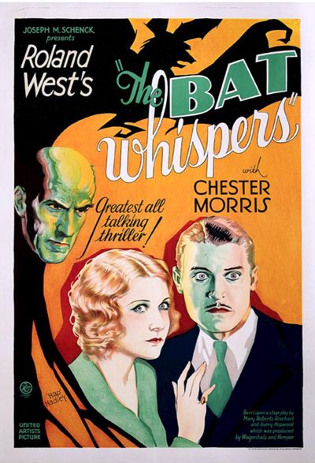

The Bat Whispers
Starring: Chester Morris, Una Merkel, Chance Ward
Director: Roland West
Writer: Roland West
Producer: Joseph M. Schenck
The Bat Whispers is a 1930 American pre-Code mystery film directed by Roland West, produced by Joseph M. Schenck, and released by United Artists. The film is based on the 1920 mystery play The Bat, written by Mary Roberts Rinehart and Avery Hopwood, and is the second film version by the same director, previously adapted in 1926.
Watch Online: Internet Archive
Trivia
- An early talkie, this film is the second film version of the 1920 hit Broadway play The Bat, written by Mary Roberts Rinehart and Avery Hopwood, based on Roberts 1908 book The Circular Staircase.
- The first film version of the play, The Bat (1926), was also directed by Roland West.
- Just as in the play and the first film, people explore an old mansion looking for a hidden treasure while a caped killer picks them off one by one.
Previous Showings
1 Run • 0 Festivals
All runs on record (1):
- October 30, 1990w/ Doctor X